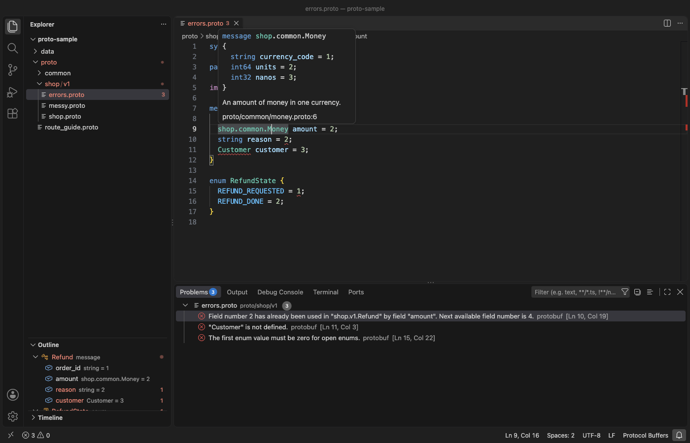

Open files in VS Code and Cursor / Code and APIs
Check .proto files for breaking changes against main
A removed field, a reused field number or a changed type in a .proto file can break clients that still run the old schema. Protobuf & Proto3 Formatter compares the .proto files in your working tree with the point where your branch left main, using your local git. Each finding says whether it breaks binary data, JSON payloads or only generated code, and you can save the findings as JSON for CI. The check is a Zovo Pro tool (USD 19 once) with 3 free tries.
Free, MIT license. Extension ID zovo.zovo-protobuf, version 0.1.0. Needs VS Code 1.75.0 or newer.

Steps in VS Code
- Install Protobuf & Proto3 Formatter from the Marketplace, or press Ctrl+P (Cmd+P on macOS) and run
ext install zovo.zovo-protobuf. - Open the folder of your git repository in VS Code. The check needs git on your PATH.
- Right-click a .proto file or a folder in the Explorer and pick "Zovo Pro: Check breaking changes against git", or run "Protobuf: Check Breaking Changes Against Git (Pro)". It checks every .proto file of the repository.
- The base is the branch in the
zovoProto.baseBranchsetting, or the first of origin/main, main, origin/master and master that exists. The check compares with the merge base of that branch and your HEAD, so changes made on main after you branched are not counted against you. - Read the report. A table counts the wire, JSON and source findings, and below it each file lists its findings with the line, the rule and what breaks.
- Click "Save JSON for CI" in the message to write
proto-breaking.jsonwith the counts and every finding.
Where Zovo Pro saves time
Highlighting, a formatter that keeps every comment, go to definition and find references across imports, hovers, completion with the next free field number, and protoc-style errors such as a field number used twice are free. They work offline, with no protoc and no sign-in.
Before a merge, a reviewer has to read each .proto diff and know the wire rules by heart. Check Breaking Changes Against Git lists removed fields, changed field numbers, types, labels, defaults and json_name, renamed fields and enum values, removed services and methods, and changed request or response types. For a removed field it names the reserved line to add. The other Pro tools write API docs as Markdown or HTML, and decode binary protobuf messages to JSON.
With Check Breaking Changes Against Git (Zovo Pro)
- Right-click a .proto file or folder and pick "Zovo Pro: Check breaking changes against git", or run "Protobuf: Check Breaking Changes Against Git (Pro)".
- A try counts only when the report opens. A missing base branch never uses one.
- Click "Save JSON for CI" to keep the findings as a file.
Check Breaking Changes Against Git works 3 times on your computer before it asks for a license, and a try counts only when you get a result. Opening a file shows no popup and no countdown.
Zovo Pro costs USD 19 once. It is not a subscription, and it turns on the Pro tools in every Zovo extension, not only Protobuf & Proto3 Formatter. After a card payment (Stripe) your license key shows on the next page. In VS Code, run "Zovo Pro: Enter Zovo Pro license key" from the Command Palette and paste it. The key is checked on your computer, with no network call. With GitHub Sponsors, pick the "$19 one time" tier, then run "Zovo Pro: I already paid: unlock with GitHub Sponsors" and sign in with the same GitHub account. With PayPal, send USD 19 with "Zovo Pro" in the note and the key comes by email within a day.
A team of 5: USD 59 once, by card or by PayPal. Every rule and every Pro tool is on the Zovo Pro page.
Steps in Cursor, Windsurf or VSCodium
- Open the Extensions view with Ctrl+Shift+X (Cmd+Shift+X on macOS).
- Search for
zovo.zovo-protobufand click Install. Cursor, Windsurf and VSCodium install from Open VSX, where it is published aszovo/zovo-protobuf. - If your editor has no gallery, download the .vsix from the Open VSX page and run "Extensions: Install from VSIX...".
- Then use it the same way as in VS Code.
What Protobuf & Proto3 Formatter handles
- proto2, proto3 and editions files.
- Messages, nested messages, enums, oneofs, maps, services and streaming methods.
- Package changes, removed files and field numbers taken from a reserved range.
- New .proto files that git does not track yet, and unsaved changes in open editors.
What it does not do
- It reads your local branches. Fetch first, so that origin/main is up to date.
- It compares with a git branch or commit, not with a schema registry or a published Buf module.
- A renamed .proto file shows as a removed file, because code that imports the old path stops compiling.
- It reads at most 5,000 .proto files.
Other options
- Buf. A free command-line tool. buf breaking compares your .proto files with a git branch or a published module, with rule sets you can tune.
- protolock. A free tool that writes a lock file of your schema and warns when a change breaks it.
Install counts and Open VSX status were checked on 13 November 2026. Descriptions in quotes are the extensions' own.
Questions
Which branch does it compare with?
The branch in zovoProto.baseBranch, or the first of origin/main, main, origin/master and master that exists. It uses the merge base of that branch and your HEAD.
Does it upload my files?
No. It runs your local git and reads the files on your computer. It makes no network requests.
Can I run it in CI?
The check runs in VS Code. Save the findings with "Save JSON for CI" and attach the file to your pull request, or use a command-line tool such as buf breaking in the pipeline.
Does it work in Cursor or Windsurf?
Yes. Cursor, Windsurf and VSCodium install extensions from Open VSX. Search for the extension in their Extensions view and install it there.
More about Protobuf & Proto3 Formatter
Read the Protobuf & Proto3 Formatter page for every feature and setting, or the source code on GitHub.
Related guides
- Edit .proto files in VS Code with highlighting, formatting and go to definition
- Decode a binary protobuf message in VS Code
- Generate API documentation from .proto files
- Open a SARIF file in VS Code
Zovo Pro and support
Zovo Pro: USD 19 once, every Zovo viewer. It turns on the Pro tools in this extension and in the other Zovo extensions you use. The free features stay free.
After a card payment your license key shows on the next page. Paste it with the command "Zovo Pro: Enter a key".
You can also support the work with no Pro:
Need your format supported?
Open a format request with a sample file, and I reply there whether it can be done. For USD 299 once, through this GitHub Sponsors tier, I add your file format or a missing feature to this extension, with tests, within 7 days.